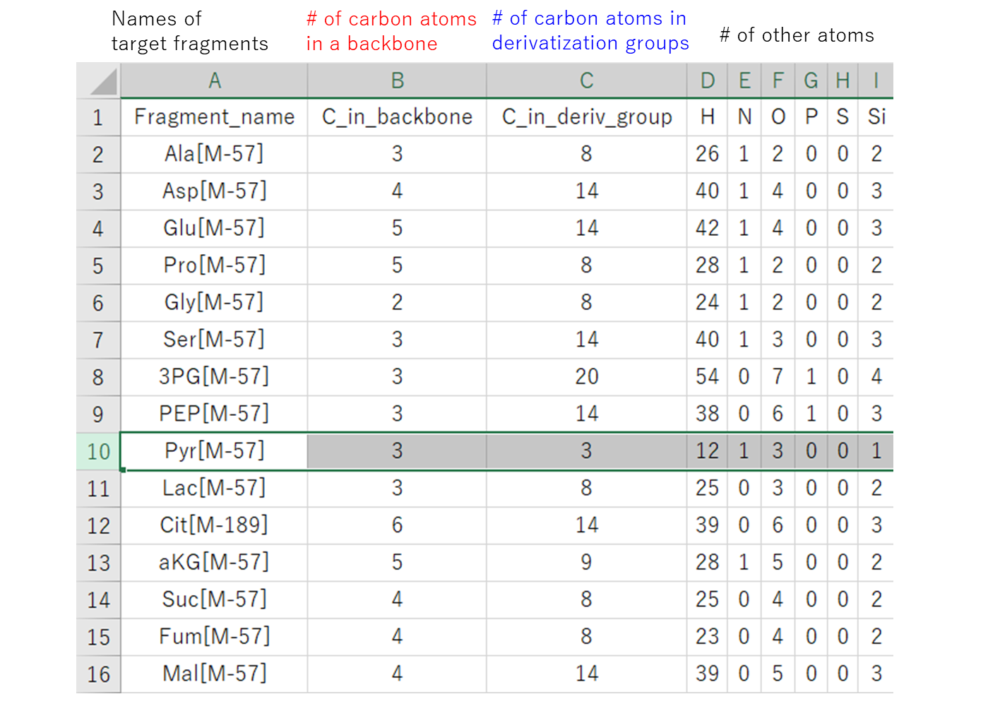
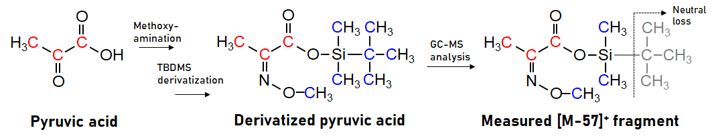
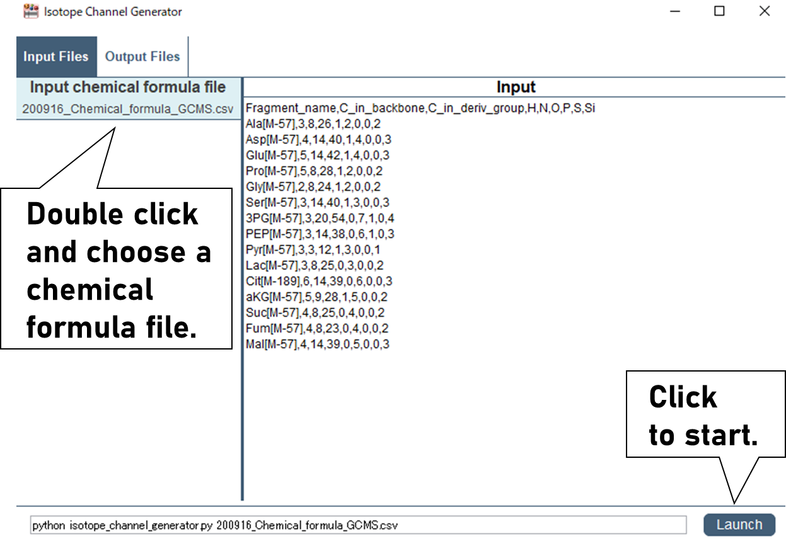
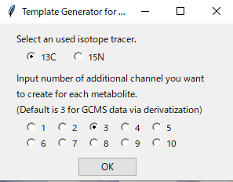
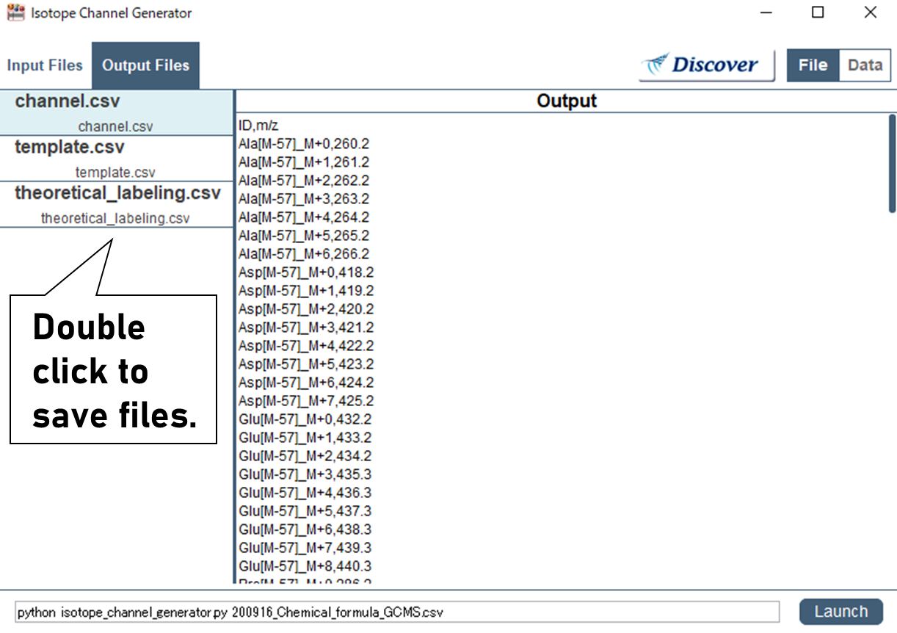

In isotope labeling analysis using mass spectrometry, it is necessary to create an additional channels to measure isotope-labeled metabolites as well as unlabeled ones. The “Isotope Template Generator” automatically generates a list of m/z to be measured and a data entry template for natural isotope subtraction by inputting the molecular formula of the target metabolites.
Preparation
Obtain an input file for "Isotope Template Generator" from here.
Enter the molecular formula of the target metabolites to be measured in the input file.

Note:
Don’t change the header in the input file.
Enter molecular formulas of ion-form metabolites measured by mass spectrometry.
Example: × Alanine C3H7NO2, ✓ Alanine[M-H] C3H6NO2
In the case of GCMS, fill in the molecular formula of metabolites derivatized in your condition and fragmented by electron ionization.

For more information on molecular cleavage patterns, please refer to following references.
Antoniewicz et al., Accurate assessment of amino acid mass isotopomer distributions for metabolic flux analysis. Anal. Chem. 79, 7554–7559 (2007).
Okahashi et al., GC-MS/MS survey of collision-induced dissociation of tert-butyldimethylsilyl-derivatized amino acids and its application to 13C-metabolic flux analysis of Escherichia coli central metabolism. Anal. Bioanal. Chem. 408, 6133–6140 (2016).
McCloskey et al., MID Max: LC-MS/MS Method for Measuring the Precursor and Product Mass Isotopomer Distributions of Metabolic Intermediates and Cofactors for Metabolic Flux Analysis Applications. Anal. Chem. 88, 1362–1370 (2016).
Okahashi et al., Fragmentation of Dicarboxylic and Tricarboxylic Acids in the Krebs Cycle Using GC-EI-MS and GC-EI-MS/MS. Mass Spectrom. 8, A0073 (2019).
Procedures
Start Garuda and open the "Isotope Template Generator".
Note:
If you see "Another instance of the Core is already running", click the icon in the lower right corner.

Select the file you created, and launch it.

Select a type of labeled atom and a number of additional channels to be created.

Note:
If naturally occurring isotopes are included in the isotopomers that are all labeled by a tracer atom, even heavier isotopomers may be generated.
Therefore, additional channels are essential for accurate correction of natural isotope effects.
3-4 additional channels are required for GCMS analysis via silyl derivatization because there are relatively abundant natural isotopes in Si atom.
For non-derivaized LCMS analysis, required numbers of additional channels can be determined based on a theoretical isotope ratio.
Three files are generated and it can be saved by double click.

Note:
The Template.csv file is used to input data into the “Natural Isotope Subtractor”, which will be used next to remove the effects of natural isotopes.
Channel.csv is used to generate a method for selected ion monitoring in your mass spectrometer. It can also be used to create extract ion chromatograms from scan data.
Theoretical labeling.csv provides the theoretical labeling ratio of metabolites in their natural state. This data can be used to validate your analytical method and data by checking whether the analysis results of chemical standards or non-labeled cell extracts match the theoretical labeling ratios.